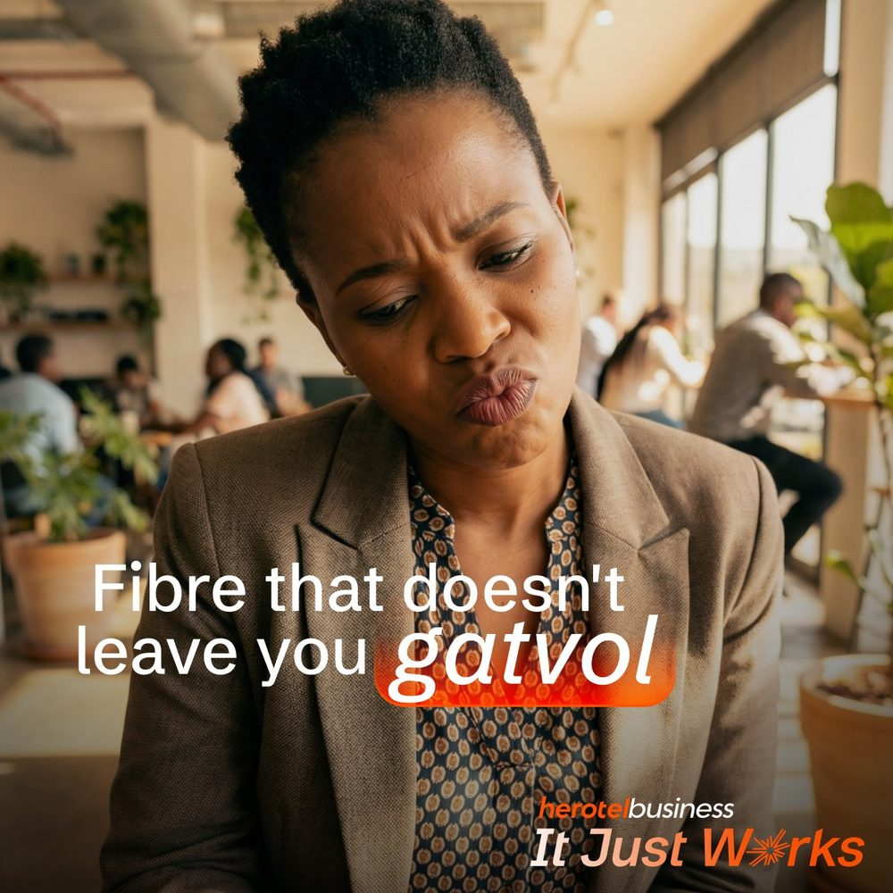

Digital Marketing Strategist
Hi. I am Zoë.
I build paid media campaigns, content architecture, and full-funnel strategy for brands that need more than good instincts.

- Herotel Business
- HID Global
- Finbond
- Global Accommodation
- Allan Gray
- Funda Wande
About me
Five years in strategy.
I currently manage a multi-client B2B and B2C portfolio spanning finance, telecoms, NGOs, retail, travel, and luxury consumer brands, including Allan Gray, Finbond, Herotel Business, Funda Wande, HID Global, and Global Accommodation.
- Years in Strategy
- 5+
- Brands Served
- 20+
Selected work